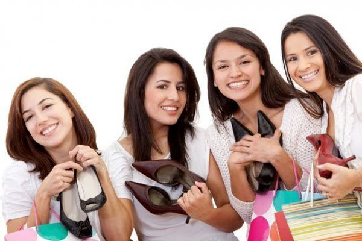
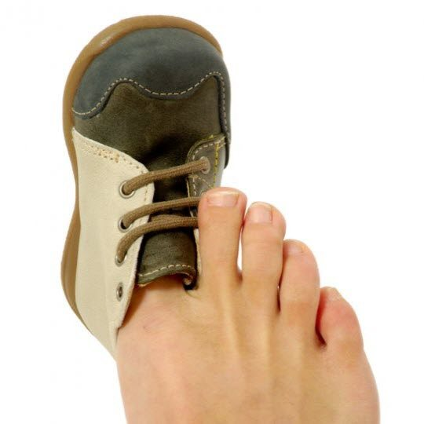
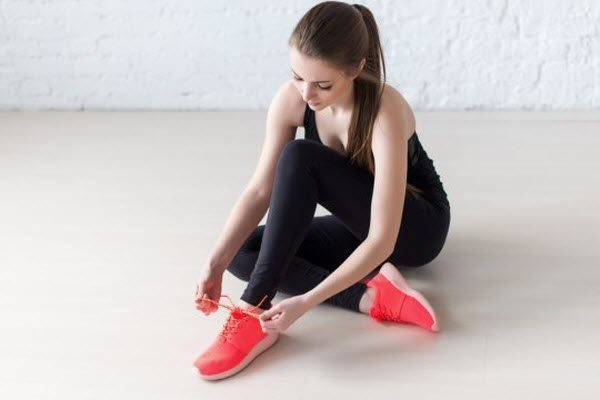

Красиве, але незручне взуття рано чи пізно помститься своєму власникові. Мозолі і натоптиші, мабуть, будуть найбільш невинною жертвою його краси. Як вибрати взуття і не втратити здоров’я в гонитві за модою?

Чим небезпечне незручне взуття?
До найпоширеніших наслідків носіння незручного взуття відносяться
- Поява мозолів і натоптишів, врослий ніготь
- Болі в стопах, спині, колінах
- П’яткова шпора
- Хвороби стоп (розвиток плоскостопості, викривлення пальців)
Основні критерії вибору правильного взуття:
Як вибрати взуття, щоб максимально захистити себе від мозолів, натоптишів, болів і інших неприємностей з ногами і здоров’ям в цілому? Просто дотримуйтеся основних правил вибору правильного взуття:
Час для примірки. Відкладіть покупку взуття з ранку на вечір. До вечора ноги зазвичай трохи набрякають. І якщо ви приміряли і купували взуття вранці, то вечорами воно може ставати тісним.
Вибір за розміром. Не купуйте тісне взуття в надії його розносити. За той час, поки вам доведеться ходити в незручному взутті, ви встигнете «заробити» мозолі і натоптиші. Під час примірки надіньте пару взуття і пройдіться по примірювальній зоні. Взуття не повинне бути тісним або бовтатися, а щільно облягати ногу, але не здавлювати її. Під час «примірочної» ходьби вам потрібно злегка відчувати носок взуття пальцями ніг, але не впиратися в нього. Пальці не повинні випирати на поверхні матеріалу. При виборі зимового взуття міряйте його на щільний носок.

Підошва і устілка. Правильне взуття – це взуття на досить м’якій і гнучкій підошві. Підошва якісного взуття легко гнеться в руках, а верхня частина не деформується занадто сильно. Товщина підошви – середня. Підошва зимових черевиків або чобіт повинна бути досить товстою і мати протектор, що перешкоджає ковзанню.
Каблук і носок.Взуття на підборах, безумовно, виглядає красиво і сексуально. Але це незручне взуття. Для щоденного носіння вибирайте взуття на невеликому широкому каблуці висотою 2-4 см. Не обов’язково повністю відмовлятися від взуття на високих підборах, але такі туфлі не можна носити часто. Високий каблук шкодить стопам і хребту.
Матеріал. Незалежно від сезону бажано вибирати взуття з натурального матеріалу. Це дозволить ногам «дихати». А взуття зі шкірозамінника не пропускає до ніг повітря, провокуючи попрілості і грибок на ногах. Крім того, хімічні складові цього матеріалу взаємодіють зі шкірою ніг. Нехай хоча б підкладка взуття, яка безпосередньо стикається з ногою, буде з натуральної шкіри або текстилю. Взуття для весни та осені не повинно пропускати воду. Якщо черевики або чоботи застібаються на блискавку, вона не повинна починатися надто близько до підошви, щоб ноги не промокали. Вибирайте взуття для зими з підкладкою з натурального хутра.
Матеріал для взуттяВибираємо правильну спортивне взуття
Правильне взуття для занять спортом – важлива складова ефективних і безпечних тренувань. Кросівки повинні оберігати від «скручування» стопи, забезпечувати нозі стійкість і фіксацію голеностопа.
Ознаки якісного спортивного взуття:
- гнучка підошва;
- жорстка п’ята;
- легкість;